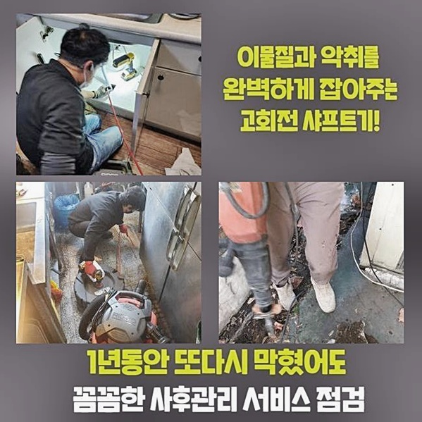
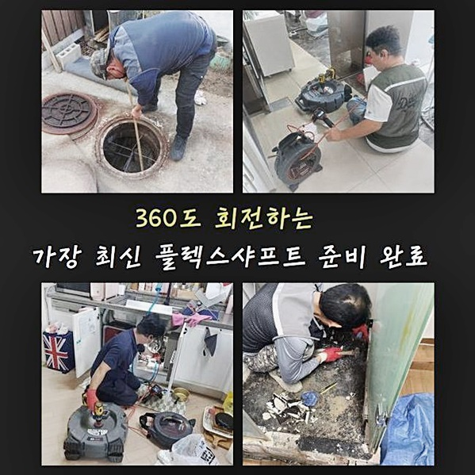
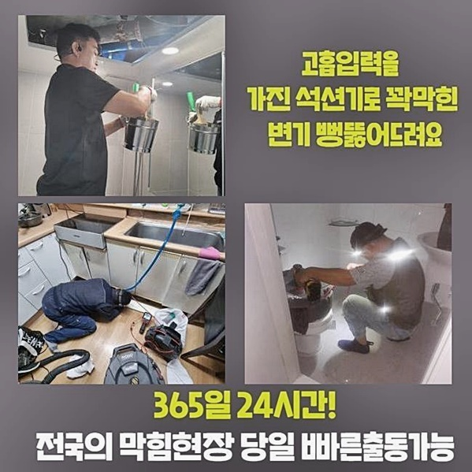
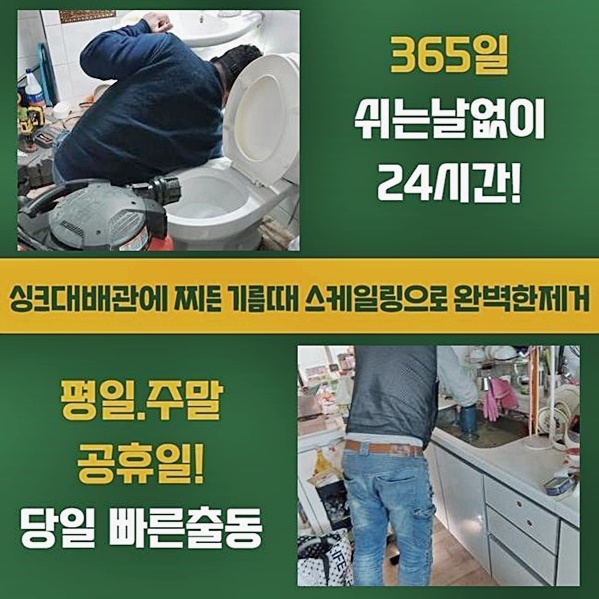
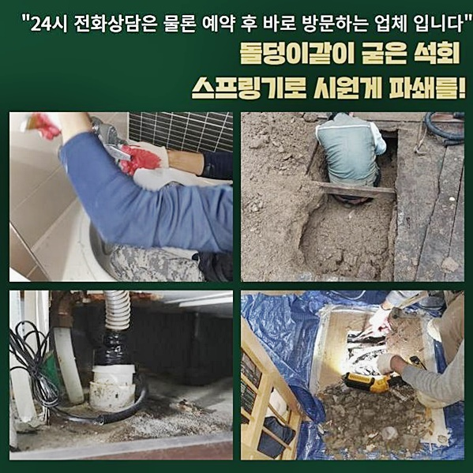
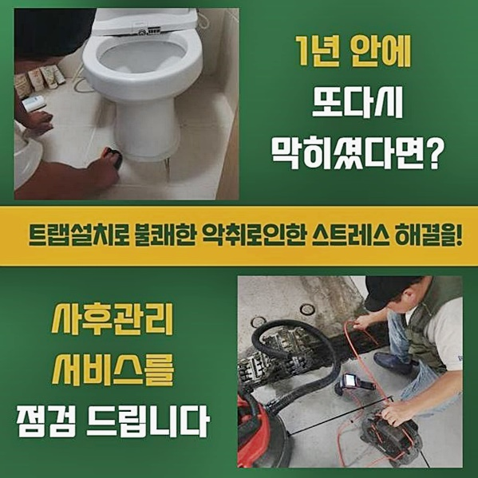

🏠 용산 원효로1동대변기역류 산천동 배수구뚫기 누수공사
용인시 처인구 배관막힘 전문 시공 후기

📋 작업 개요
- 위치: 용인시 처인구, 수원시 영통구, 화성시 동탄
- 서비스 유형: 배관막힘, 누수수리, 내시경점검
- 작업 일시:
- 업체명: 하수구수사대 (010-5615-2118)
🔍 문제 상황
용산 원효로1동대변기역류 산천동 배수구뚫기 누수공사
하수구 고장으로 곤란하실 때 빠르게 현장으로 이동하여 문제가 생긴 하수시설과 막연한 마음까지 달래드리는 작업을 해드리는 업체입니다!
큰 오류없이 물이 정상적으로 내보내지던 하수배관이 예고도 없이 막힘이 생겨버려서 나름 많은 방법을 물색하여 원상복구를 시키려 했으나 크게 달라지는 바가 없었나요?
그런 경우라면 하수전문가인 저희에게 SOS를 요청해 주신다면 정상이용이 바로 가능하도록 맞춤 작업을 시행해 드리니 편하게 연락주시면 되는데요
보통 하수관이 마비되는 것은 보통은 이물질이 껴서 생기는 케이스가 대부분입니다
만약에 내부에 이물질들이 딱히 차오르기 전인 초기 레벨이면 가볍게 이용하실 수 있는 연화제라거나 뚫어뻥같은 도구 같은 비교적 평이한 방식만 걸어줘도 막힌 부분이 완화됩니다
통로 지름에 가득 끼어있다거나 부패해서 돌덩이처럼 굳어진 경우일 때는 전문지식이 없다면 그리 성공확률이 높진 않아요
심상치않은 막힘이라고 판단될 시 전문서비스를 요청해서 제대로 개선을 해보셔야 하는데요
얼마전 아파트에 거주하시는 고객님이 어제까지만해도 괜찮던 싱크시설에 오류가 생겨서 얼른 뚫어주실 수 있냐하는 전화를 해주셨고 지체 없이 출동을 하게 되었는데요
하수관의 마비가 생기면 반복적인 막힘이 찾아올 것도 대비를 해줘야 합니다
오염물질이 쭉 누적되어 막힘이 생겼을 때 단번에 뚫지 않고 대충 뚫고만다면 찌꺼기들이 날로 확장하면서 하수관을 막게 되는 겁니다
아파트에서 진행되는 작업건들을 놓고 보면 까다롭다 싶은 작업은 거의 없는 일이므로 그다지 걱정할 것은 없어요
모든 건을 평등하게 보고 의외의 변수가 얼마든지 형성되었을 수 있으니 다양한 변수를 대비하고 있어요

🔎 원인 분석
💡 전문가 진단: 정밀 진단 장비를 사용하여 슬러지의 고착 여부를 판명하고 타격/세척 작업을 실시했습니다.
원활한 하수구작업을 이어가려면 예를 들면 석션장비나 배관용 내시경과 플렉스샤프트 등 장치들이 같이 활용됩니다
뛰어난 효능을 자랑하는 장치들을 두루 가지고 확인한 후 출발 해드리고 있어요
석션기는 일반 청소기와 거의 흡사한 원리로 액상까지도 흡수시키는 습식기기입니다
약간의 이물질만 있다면 석션기만으로도 가볍게 흡입을 몇 차례 거치면 중단된 점이 고쳐지는 단순한 상황들도 있어요
이 정도로 간단한 케이스는 소수일 뿐이며 여러 장치들을 써야하는 때가 확률적으로 유력합니다
석션의 가동으로 노폐물의 흡입을 하는 동시에 안쪽에 찰랑대는 하수까지 흡수하는 특수성이 있는데 관로 자체를 비워야만 관로 속에 카메라를 넣어줄 수 있습니다
어디가 막혀있는지 알려주시면 바로 장치와 함께 자리를 잡고 문제점을 전반적으로 스캔을 해봅니다
개수대에 물이 흥건했고 막힘이 지속되어오다 주름관의 틈새에서 역류의 흔적까지 관찰됐어요
적당량의 물만 내려보내면 느릿느릿하게 빠져나가긴 하지만 한번에 많은 물을 부었을 때 울컥대면서 도로 올라온다면 끈적한 이물질들이 대량 존재한다는 방증이겠죠
긴 관로를 따라 이물질이 붙어 물이 고이고 압력이 차다가 밑이 아닌 위로 터져올라와요
석션기를 가동해서 청소를 택하여 시작해 보았더니 슬러지 덩어리는 온데간데 없었고 물만 찰랑거리며 흡입되었네요
게다가 역류증세도 여전한 모습인데다 개수대 쪽의 물은 고스란히 정체해 있었습니다
오염된 하수는 몽땅 제거해뒀으니 어떤 문제로 막혔는지 그 사유를 검사하기 위해서 환한 라이트가 달린 내시경기를 깊숙하게 당도시켜 주었습니다

🔧 작업 과정
배관으로 진입한 지 오래되지 않아서 문제점을 파악하게 됐는데요
부패한 기름이 뭉친 슬러지가 시야를 가득 메워서 앞이 전혀 파악하기가 난감했습니다
오랜시간 방치되어 왔던 막힘상황이라 물이 정상 배출될리가 만무한 상황이었죠
배관 기능을 정상 반열에 올리려면 맞춤으로 청소를 해줘야 했어요
딱딱하게 돌처럼 굳어버린 침전물 덩어리가 있다면 작은 입자로 부숴서 흡입 작업을 거쳐야 하므로 모터의 힘으로 회전하는 강하게 합체된 기름찌꺼기를 자잘하게 쪼개주었습니다
플렉스샤프트의 머리 쪽에 자리한 사슬이 움직이면서 자잘하게 해체가 되도록 조금씩 잘라 나갔습니다
파워가 강한 샤프트지만 계속해서 상황을 살펴가며 수행하니 배관의 벽체가 크랙이나 부서짐이 생기지 않아요
초급에 그치지 않고 전문가가 상황에 맞게 바람직한 레벨로 작동을 시키니 과한 소리에 놀라지 않으셔도 돼요
다양한 케이스를 섭렵해오고 노하우도 든든히 축적되어 있으니 해결에 이르기까지의 난이도가 제법 높은 상황에서도 당황하지 않고 조치를 취하고 있어요
여러가지 면들을 꼼꼼히 따져보고 맞춤형으로 뚫고 있으며 남은 잔량없이 처리하는 데에 항상 최선을 다하고 있습니다
고성능의 카메라 장치로 막힘을 뚫어준 파이프 내부가 다친 곳은 없는지 꼼꼼하게 봐드리고 있어요
웬만큼 돌린 이후에 샤프트가 힘을 발휘하고 나면 다음은 석션기로 적당한 크기로 썰린 노폐물을 원활하게 소거해 줍니다
이제 석션차례라서 샤프트의 몸체를 당겨서 구멍 밖으로 올려보니 바디에 냄새가 어마무시한 이물질들이 달라붙어 있었네요
길게 이어진 슬러지층을 계속 조각낸 다음 흡수시키는 작업 내역을 여러 차례 꾸준하게 임하다 보면 지독한 슬러지로 인한 막힘은 모두 풀리게 된답니다
점차 물 속에서 부패해 가며 자리해 왔기때문에 썩은내도 상당한 수준이더라고요
질벅한 이물질들을 없애는 데에 집중하다보면 자연히 악취에 대한 고민도 모두 풀리게 된답니다
혹시라도 미량의 입자라도 추가적 문제를 야기하지 않게 한 톨도 남아있지 않게 배수로를 청소해 나가요
정말 막대한 양의 이물질이 이미 빠진 후라서 앞서 관찰했던 모습과 견주어보면 거의 180도 변했네요
이제는 막혀있는 측면들을 없애준 후이니 다음은 내부의 오염 물질들을 흡수해서 말끔하게 정리정돈해 주면 끝입니다
배관카메라로 다시 내부 안쪽의 상황을 판별해 보니 꽉 막혀있던 모습이 초기 설치상태로 돌아온 것을 실제로 체험하게 됐네요
옆에 계시던 고객님도 함께 설비의 이모저모를 보시곤 비로소 만족의 웃음을 지어주셨죠


✅ 작업 완료
마음 놓고 시설을 이용하시도록 20분에 이르기 까지 하수구 정돈을 해드리니 물이 내려가는 길목은 새 것이라고 해도 믿을만큼 위생 상태도 좋아졌어요
싱크대 수도꼭지에서 수도를 켜서 기능검사를 시행거쳐보았는데 다행히도 시원한 소리를 내면서 잘 빠져나가는 것이 보였네요!
소량만 내려보내지 않고 한방에 버릴 때도 제대로 이루어지는지 테스트를 마찬가지로 실시해 봤는데요
수도를 가득 담아서 단번에 내렸는데도 주름관에서 역류 관련한 증상 없이 말끔히 처리가 되더라고요
이번 작업에 사용되었던 기기들을 다 수습하고 싱크대의 아래 위 환경도 물기 하나 없이 정화하고 사용방법을 알려드렸습니다
하수구가 불현듯 중단되어 어떻게 해야할지 막막하시다면 의뢰만 쉽게 맡겨주시면 가장 빠른 타임으로 잡아서 현장 조사에 이은 해결까지 담당해 드리도록 하겠습니다



⚠️ 하수구 배관 막힘 예방 및 관리 가이드
- ✅ 머리카락, 비닐, 물티슈 등 물에 분해되지 않는 이물질은 절대 흘려보내지 마세요.
- ✅ 기름기 많은 식기는 설거지 전 키친타올로 먼저 기름때를 닦아내세요.
- ✅ 주기적으로 배수구에 뜨거운 물을 가득 부어주어 유지방 고착을 방지하세요.
- ✅ 작업 후 1년 이내 재발 시 무상 A/S 보증 서비스를 제공합니다.
💡 핵심 정리
- 확실한 장비 작업(내시경 점검 및 샤프트 스케일링)으로 원인을 뿌리 뽑습니다.
- 작업 후 1년 이내에 동일한 부위 재발 시 100% 무상 A/S 서비스를 보장합니다.
- 서울 · 경기 · 인천 전 지역에 24시간 언제든 긴급 출동할 수 있도록 항시 대기 중입니다.
❓ 자주 묻는 질문 (FAQ)
🚨 용인시 처인구 배관막힘 문제로 고민이신가요?
정확한 원인 진단과 확실한 시공으로 재발 없는 해결을 약속드립니다.
24시간 긴급 출동 | 서울 · 경기 · 인천 전지역 | 1년 내 재발 시 무상 A/S